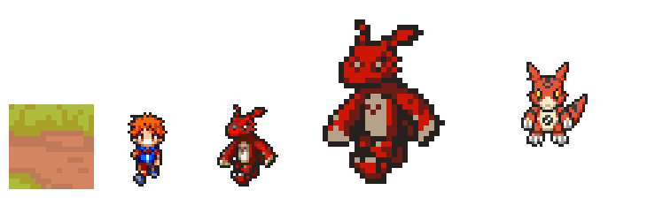
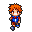
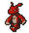
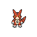
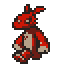
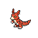
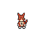
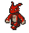
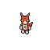

GS-003 — Guilmon, prova de escala v3: M1 (Pro Flash por texto, 64×64) vs M2 (v3+referência limpa, 60×68)
Revisão do coordenador sobre a v2: o resultado ficou "30px dobrado" — 4 cores, blocos 2×2, olhos com 1-2 pixels, sem detalhe extra que justifique 64px. Causa: qualquer método ancorado no rip de 30×34 (como o M2, que usa esse frame como reference_image do create_character(v3)) herda o teto de informação do sprite original, por mais limpa que a referência esteja. Esta prova testa o M1 do backlog: create_character_pro_flash gerando o Guilmon por descrição de texto, sem nenhuma referência de pixels do rip — só um style_image do Tamer (com color_palette=false) para herdar o traço/sombreamento do jogo, não a paleta.
1. Prancha de proporção (estática, fator ×3) — tile · Tamer · rip · M2 (v2, 60×68) · M1 (v3, 64×64)
Base alinhada (pés no mesmo nível), nearest-neighbor ×3 puro-stdlib (scripts/compose_board.py, sem IA, sem custo).

2. South lado a lado, fator ×4 — rip · M2 · M1

Tile de mapa
32×32px

Tamer (jogador)
32×32px — usado como style_image do M1 (outline/sombreamento, não a cor)

Guilmon atual (rip DS)
30×34px nativo

Guilmon M2 (v2, ref. limpa)
60×68px — herda o teto de detalhe do rip 30×34 via create_character(v3, reference)

Guilmon M1 (v3, Pro Flash texto)
64×64px — sem referência de pixels do rip; sombreamento em 3-4 tons, olho com pupila, marcas e garras legíveis
3. South-west genuíno (3/4, nunca existiu no rip) — M2 × M1

SW — M2 (v2, ref. limpa)

SW — M1 (v3, Pro Flash texto)
4. Idle e walk animados, direção S — M2 × M1
GIFs nativos, fator ×4 (CSS image-rendering: pixelated, sem reamostragem). Esta prova só cobriu S (teto de 8 gerações: 6 no personagem + 1 idle + 1 walk, sem sobra para SW animado).

Idle S — M2 (v2)

Idle S — M1 (v3)

Walk S — M2 (v2)

Walk S — M1 (v3)
5. Leitura do diretor de arte
- O M1 é claramente superior em densidade de informação: south sai com 17 cores em clusters anatômicos reais (sombra do corpo, faixa do peito, garras, orelhas separadas da cabeça) contra os 4 cores planas do M2, que é literalmente o rip de 30px redesenhado em escala maior sem pixels novos.
- O south-west genuíno confirma o mesmo padrão: o M1 pinta uma pose 3/4 com gradiente de sombra ao longo do corpo e da cauda (31 cores), enquanto o M2 mantém o visual "upscale" plano.
- Identidade: cores (vermelho/creme/preto), orelhas pontudas, olho amarelo, marca escura no peito e cauda grossa batem com o design oficial do Guilmon nas 8 rotações e nos 10 quadros de animação gerados — sem deriva perceptível.
- Ver README.md §4 para o veredito completo, incluindo onde o resultado ainda fica genérico (a marca do peito não é o spiral/yin-yang canônico do "Digital Hazard", é uma aproximação).